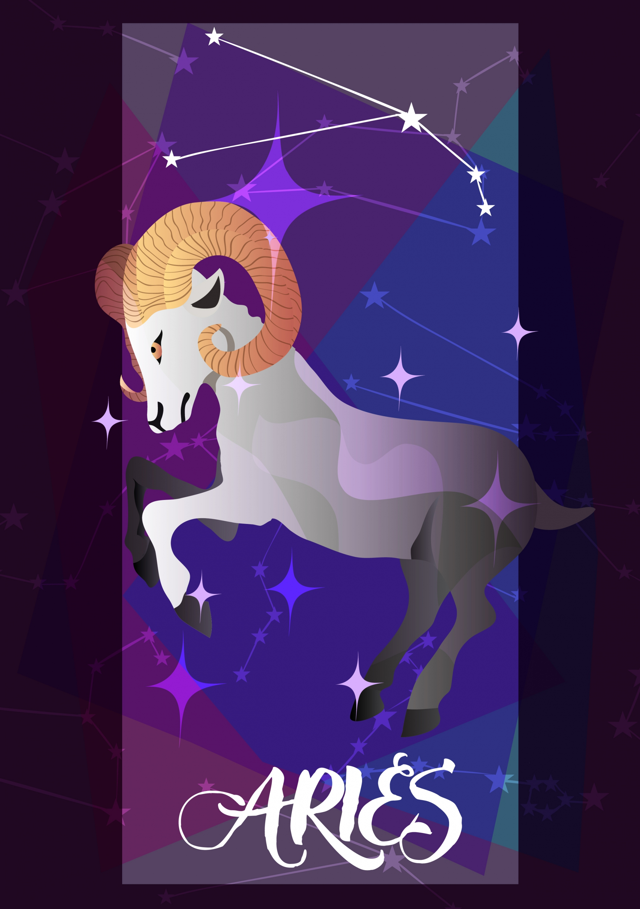

THE RAM | MAR 21 - APR 19
AMBITIOUS, INDEPENDENT, IMPATIENT.
| Element: Fire | Polarity : Positive |
| Quality : Cardinal | Ruling Planet: Mars |
| Spirit Color : Red | Lucky Gem : Diamond |
| Flower : Thistle & honeysuckle | Top Love Matches : Sagittarius |
| Ruling House : First |
The first sign of the Zodiac, Aries are the trailblazers. Passionate and independent, Aries will never do something just because everyone else is doing it—a Ram needs to be 100 percent committed to the task at hand. Competitive to the max, the best way to motivate an Aries is to turn something into a contest. Aries will put everything they have (and then some) into winning. Loyal, smart, and impulsive, they always have multiple projects on their mind, and won't be satisfied until their work, social life, and personal lives line up exactly with the dream life they've envisioned. Those who are drawn to magnetic Aries may have trouble keeping up—but if they can, they'll have a friend for life.
An Aries will always tell you what they're thinking, with a frankness that may occasionally border on rudeness. But even if an Aries seems overly blunt with their opinion, that's only because Rams value honesty above all else. And it works both ways. While an Aries may be the first to say if they think that you just phoned in a project, they'll also be the first to compliment you for a job well done. Rams may also have a short fuse. That fiery temper can be an asset. When an Aries is angry, they'll never play the passive-aggressive card. But for people who don't know them well, their temper can be a turn off. Learning how to work out their anger—whether by going to the gym every day, taking some deep breaths, or learning to chill before they Tweet their thoughts to the world—is a lifelong process for Rams.
When it comes to love, Aries are all about initial attraction. They can sense chemistry in the first sentence uttered by a potential partner. Forthright and unabashed, an Aries will do everything in their power to go after someone they want. Sometimes, they need to learn how to slow down and foster long-term connections. Fireworks are fun, but they don't necessarily make a great match. Aries are amazing lovers: versatile, passionate, and always invested in the moment.
"When you know yourself, you're empowered. When you accept yourself, you're invincible."
Whether it's backpacking around the world, launching a business, or training for a marathon, once an Aries sets a goal, they will achieve it. They don't care what anyone else thinks, and can tune into their intuition and dreams in a heartbeat. Rams never need a plus one—they love their own company, and consider going solo to the movies a rare treat.
The world according to an Aries makes so much sense that they have a hard time listening to, much less accepting, alternative viewpoints. Slowing down is also tough. A Ram's mind goes a million miles a minute, and slowing down for others can be excruciating. But when it comes to maintaining relationships, Aries must learn to adapt and embrace other ways of doing, being, and seeing.
Strong, adamant, and forged in fire, it's fitting that Aries' secret weapon is iron, one of the strongest elements. Weld, cast, machine, forge, temper, harden, or anneal it, iron can take on a seemingly limitless range of shapes and qualities. For an Aries, an iron-rich diet can boost confidence and performance.
Big Sean, Marlon Brando, Charlie Chaplin, Joan Crawford, Leonardo da Vinci, Robert Downey Jr., James Franco, Robert Frost, Lady Gaga, Harry Houdini, Thomas Jefferson, Keira Knightley, Vincent van Gogh, Emma Watson, Reese Witherspoon